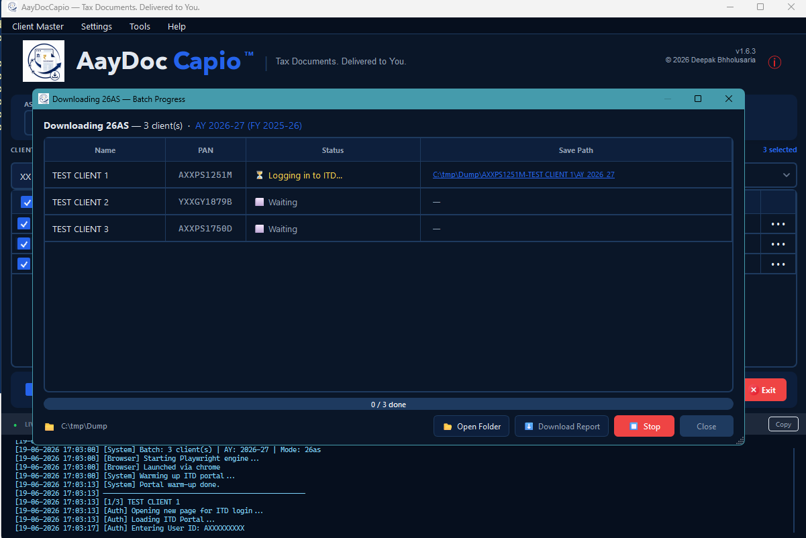
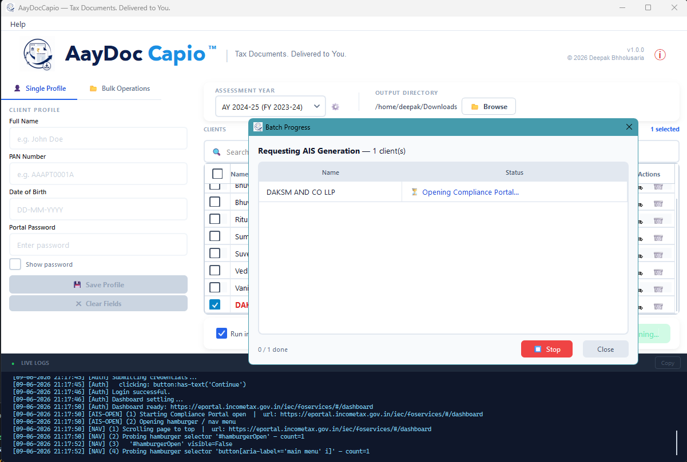
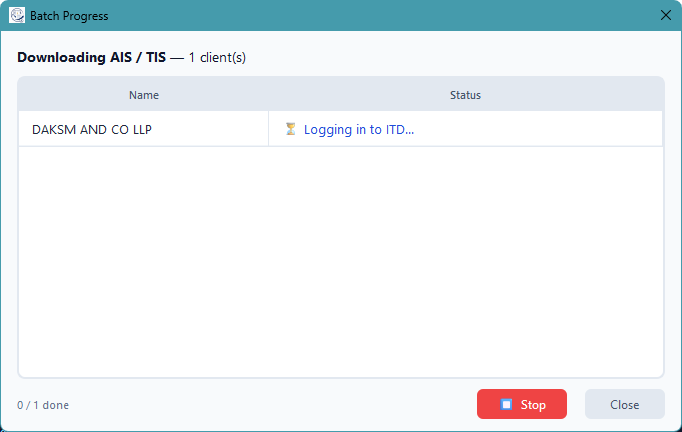
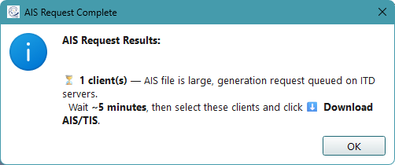
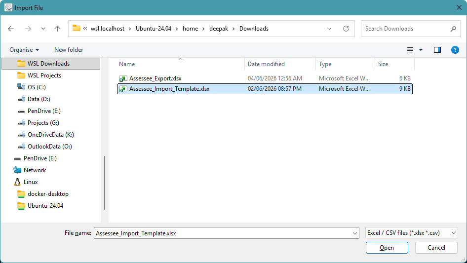
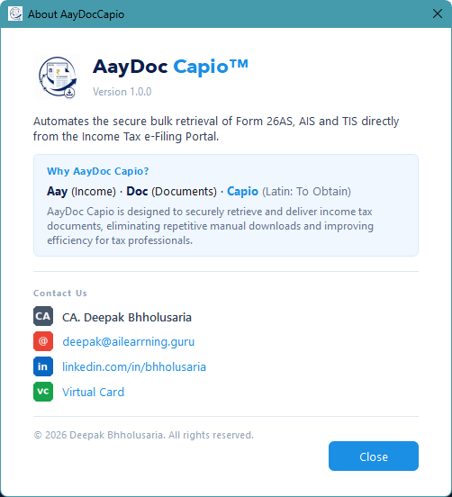

Automates the secure bulk retrieval of Form 26AS, AIS and TIS directly from the Income Tax e-Filing Portal — for multiple clients, in one click.
Recommended for most existing Windows users. Use this if you previously installed AayDocCapio with the .exe setup.
Download .exe v1.4.4 · Wizard InstallerFor new enterprise or IT-managed installs. If switching from .exe, uninstall the .exe version first.
Download .msi v1.4.4 · Silent / managed installApple Silicon app bundle packaged as a zip. Open the app once via right-click → Open if Gatekeeper warns.
Download macOS zip v1.4.4 · .app bundleAayDocCapio is designed to securely retrieve and deliver income tax documents, eliminating repetitive manual downloads and improving efficiency for tax professionals.
PAN, DOB, and portal passwords are stored locally in tax_vault.json with PBKDF2HMAC + Fernet AES-128. No cloud sync or telemetry.
Download Form 26AS PDF + TXT, AIS PDF, and TIS PDF for all selected clients in a single sequential batch.
Convert 26AS TXT into Excel + HTML with Assessee Details, Part I-IX sheets, summary links, and large-file streaming.
Per-client real-time status, conversion state, saved-folder links, Stop control, and step-by-step logs.
Bulk-load assessees from Excel or CSV. Generate a pre-formatted import template in one click.
Filter by status and review the last result and saved location per client, per AY/FY.
Manage assessment, tax, and financial year entries from Settings and keep output folders consistently labelled.
PDFs and 26AS TXT ZIPs are unlocked using PAN and DOB-derived passwords, with clear warnings if DOB is wrong.
Light and Dark Navy themes, plus hidden browser automation by default with visible debug mode when needed.
Run AayDocCapio_Setup_v1.4.4.exe for a standard Windows install, or use the MSI for new managed deployments. The app downloads the Chromium browser engine automatically when needed.
Add clients manually from Client Master, or import Excel / CSV records with Name, PAN, DOB, and Password columns.
Pick the AY/TY/FY entry from the dropdown, manage years from Settings, and choose where downloaded files should be saved.
Tick one or more clients, click ▶ Run, and choose Download 26AS or Download / Request AIS & TIS. A live progress popup tracks every client in real time.
Files are saved to <Output Dir>/<PAN>-<Name>/AY_<year>/. 26AS can include PDF, TXT, Excel, and HTML outputs.






| Concern | How it's handled |
|---|---|
| Credential storage | AES-128 (Fernet) encrypted local file — tax_vault.json |
| Key derivation | PBKDF2HMAC / SHA-256, 100,000 iterations |
| Installer upgrades | tax_vault.json and assessment_years.json are preserved during uninstall or migration |
| PAN in logs | PAN is never included in error or log output |
| Vault in git | tax_vault.json is in .gitignore — never committed |
| Network | Credentials only submitted to the official ITD portal — no third-party services |
All credentials (PAN, DOB, portal password) are stored in an encrypted local file tax_vault.json on your machine using PBKDF2HMAC + Fernet AES-128. Nothing is sent to any server — the app only communicates directly with the official ITD e-Filing portal.
The Insight/AIS portal's download buttons only fire correctly in real Google Chrome. Playwright's bundled Chromium does not trigger the download event on that portal. Form 26AS works fine without Chrome.
When an AIS file is large, the ITD server queues its generation. AayDocCapio will show a notification with a reference number. Wait ~5 minutes, select those clients, and click Download Previously Requested AIS.
No. Each client is fully isolated — if one fails (wrong password, portal timeout, etc.), the reason is shown in the progress popup and the batch continues for all remaining clients.
Files are saved to the output directory you choose, in the structure: <Output Dir>/<PAN>-<Client Name>/AY_<year>/. PDFs are automatically unlocked and ready to open. 26AS outputs can include PDF, TXT, Excel workbook, and HTML.
Use the .exe setup for normal users and for upgrades from older .exe installs. Use the .msi for new IT-managed deployments, silent installs, or Group Policy deployment. Avoid installing both types on the same machine.
No. The installers are configured to preserve app data. Your tax_vault.json and assessment_years.json remain on the machine during uninstall or installer migration.
The app guards against accidentally mixing installer types. The .exe installer can prompt to remove an existing guarded MSI install before continuing. If moving from an older .exe install to MSI, uninstall the .exe version first, then install the MSI.
Yes. The portable dist\AayDocCapio\ build folder can be zipped and run directly without installation. The installer is recommended for most users.
Yes, this is a false positive. AayDocCapio is compiled from Python source using Nuitka. Compiled Python binaries are commonly flagged by heuristic antivirus scanners because their byte patterns resemble packed executables — even though the code is entirely safe and open source.
If Brave / Chrome blocks the download:
Click the ↓ download icon → click … next to the file → Keep → Show more → Keep anyway.
If Windows Defender shows "Threats found":
Open Windows Security → Virus & threat protection → Protection history, find the entry, click Actions → Allow on device.
If Windows SmartScreen blocks the installer:
Right-click the file → Properties → tick Unblock → Apply. Then run it — if SmartScreen still appears, click More info → Run anyway.
You can audit every line of code at github.com/dkbholusaria/AayDocCapio.
AayDocCapio was created to eliminate the repetitive manual effort of downloading income tax documents for multiple clients every season. It is free, open source, and built entirely with Python.